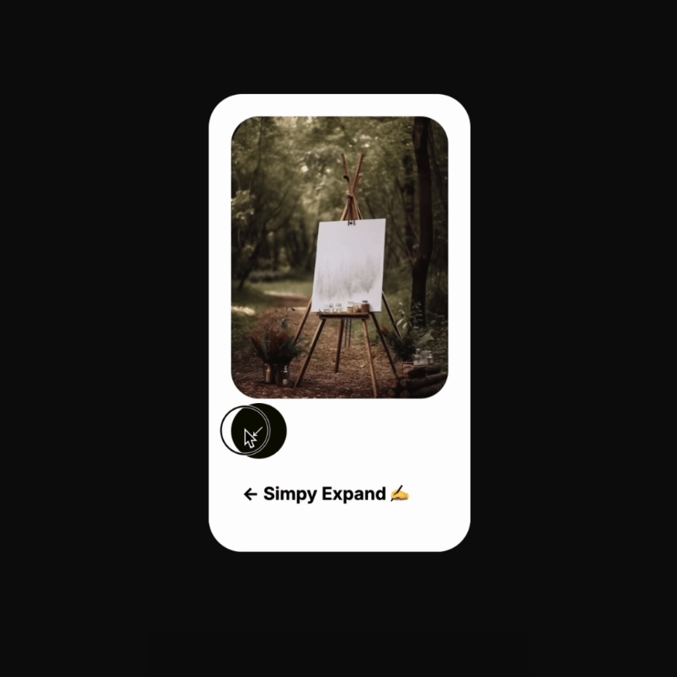

Day 2 - click-to-reveal 🙌
-> Source code on my github: spikedyew.github.io ✍️
- 😅 This project took me to complete 3 hours
- 😠With animation and deployment
- 🥳 This project was fairly simple


🔜 Add responsivity
🔜 Add parallax scrolling